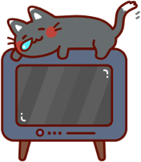
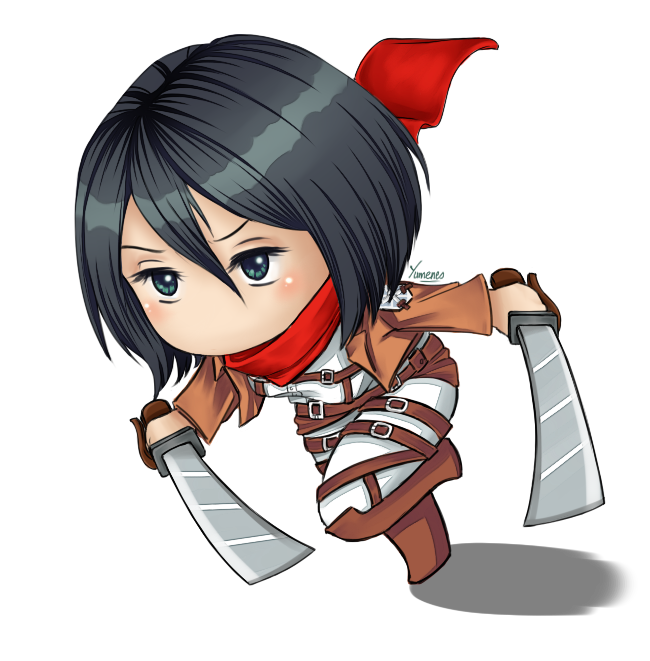
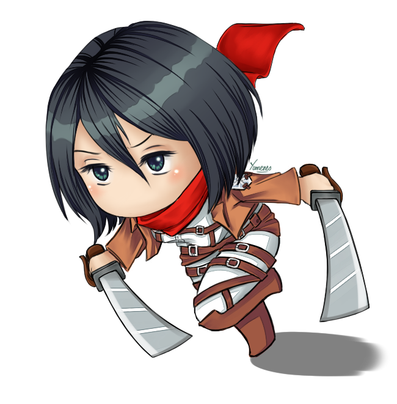

Favoritos

¡Tu lista está vacía!
Dale amor añadiendo tus animes favoritos :)
Resultados
¡Utiliza el buscador para encontrar todos tus animes!
¡Tu lista está vacía!
Dale amor añadiendo tus animes favoritos :)
¡Utiliza el buscador para encontrar todos tus animes!
